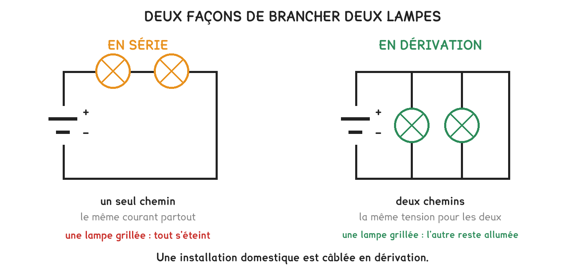

CAP Électricien · 1re année
Deux montages câblés au poste, une lampe dévissée dans chacun. Ce qu'on mesure ensuite explique toute l'installation domestique.
4 exercices · 8 items d'entraînement · 2 figures
Savoirs travaillés

Une lampe dévissée dans chacun : en série, l’autre s’éteint ; en dérivation, elle reste allumée.
En série : l’intensité est la même partout, la tension se partage. En dérivation : la tension est la même sur chaque branche, l’intensité se partage.
Les deux montages ne partagent pas les mêmes grandeurs, et c’est ce qu’on vérifie au poste.
En série : un seul chemin, donc le même courant partout, et c’est la tension qui se partage entre les récepteurs.
En dérivation : chaque branche voit la même tension, et c’est le courant qui se partage entre elles.
Série · CN
Exercice · CN
Deux lampes en dérivation sous 6 V. Quelle tension aux bornes de la lampe 1 ?
Exercice · CN
Toujours sous 6 V : la lampe 1 consomme 40 mA, la lampe 2 en consomme 30. Quel courant l’alimentation fournit-elle ?
Appliquer la règle de l’autre montage. Partager la tension en dérivation, ou partager le courant en série : c’est l’erreur la plus fréquente de la séquence. On identifie le montage d’abord.
Exercice · AU
En deux phrases : qu’est-ce qui serait impossible dans un logement câblé en série ?
Une installation, c’est des branches en dérivation, chacune protégée par son disjoncteur. La série, elle, ne sert qu’aux piles d’une torche et aux guirlandes bon marché.
Un seul problème, qui reprend toute la séquence. On le fait d’un bout à l’autre, comme un vrai : il n’y a pas d’indication de méthode en cours de route. À la fin, on produit son fichier de réponses.
Un lot de résistances est arrivé à l’atelier, marquées 220 Ω. Le formateur veut savoir si le marquage est honnête. Le relevé fait au poste :
| I (mA) | 10 | 20 | 30 |
|---|---|---|---|
| U (V) | 2,2 | 4,4 | 6,6 |
La question : « La résistance vaut-elle bien ce qui est écrit dessus ? »
Lire la situation
a) Relever la valeur annoncée par le marquage, avec son unité.
b) Dire dans quelle unité la loi d’Ohm demande l’intensité.
Choisir la méthode
c) Proposer une façon de vérifier le marquage à partir du relevé, sans ohmmètre.
d) Dire à quoi on reconnaîtrait, sur un graphique, que U et I sont proportionnels.
Calculer
e) Convertir les trois intensités en ampères.
f) Calculer U ÷ I pour chacun des trois couples.
g) Prévoir la tension que donnerait un courant de 25 mA.
Conclure
h) Dire ce que signifie le fait que les trois quotients donnent le même nombre, puis répondre à la question.
Série · ELEC
Exercice · ELEC
Expliquer en deux phrases ce qu’on apprend du fait que U ÷ I donne le même nombre sur les trois couples.
Ce site rappelle la méthode. Aucun corrigé, rien n'est noté.